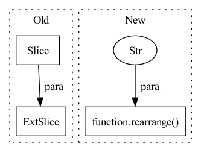

Pattern ID :1321
Before Change
gate = self.norm(gate)
weight, bias = self.weight, self.bias
weight, bias = weight [:, : n, :n], bias[:, :n]
mask = torch.ones(weight.shape[:2], device = device).triu_(1).bool()
weight = weight.masked_fill(mask[..., None], 0.)After Change
gate = rearrange(gate, "b w n (h d) -> b w h n d", h = h)
gate = einsum("b w h n d, h m n -> b w h m d", gate, weight)
gate = gate + rearrange( bias, "h n -> () () h n ()" )
gate = rearrange(gate, "b w h n d -> b w n (h d)")
out = gate * resIn pattern: SUPERPATTERN
Frequency: 3
Non-data size: 3
Instances Fragment ID: 4630502
Project Name: lucidrains/g-mlp-gpt
Commit Name: a2f065dfcf7be1d1e4b205ac1a55de4ad1b3327d
Time: 2021-05-20
Author: lucidrains@gmail.com
File Name: g_mlp_gpt/g_mlp_gpt.py
M Class Name: CausalSpatialGatingUnit
N Class Name: CausalLocalSGU
M Method Name: forward(2)
N Method Name: forward(2)
M Parent Class: nn.Module
N Parent Class: nn.Module
M File Name: g_mlp_gpt/g_mlp_gpt.py
N File Name: g_mlp_gpt/g_mlp_gpt.py
M Start Line: 90
M End Line: 100
N Start Line: 130
N End Line: 154
Before Change
out = rearrange(u_f * K_f, "... h d -> ... (h d)")
out = irfft (out, seq_len * 2, dim = -2)[..., : seq_len, :]
return out + residual
After Change
out = conv1d_fft(u, K, dim = -3, weight_dim = -2)
out = rearrange( out, "... h d -> ... (h d)" )
return out + residual
class GatedDsConv(nn.Module): Fragment ID: 4630508
Project Name: lucidrains/gated-state-spaces-pytorch
Commit Name: b0c0e2150b8a4be3a2ddf560e3eba823addb2188
Time: 2022-07-02
Author: lucidrains@gmail.com
File Name: gated_state_spaces_pytorch/dsconv.py
M Class Name: EfficientDsConv
N Class Name: EfficientDsConv
M Method Name: forward(2)
N Method Name: forward(2)
M Parent Class: nn.Module
N Parent Class: nn.Module
M File Name: gated_state_spaces_pytorch/dsconv.py
N File Name: gated_state_spaces_pytorch/dsconv.py
M Start Line: 44
M End Line: 64
N Start Line: 64
N End Line: 80
Before Change
if flattened_dim:
logits = rearrange(logits, "b ... n -> b (...) n")
logits = logits [:, : seq_len]
return logits
After Change
if flattened_dim:
return logits
return rearrange( logits, "b (s d) n -> b s d n" , d = depth)
logits = logits[..., :-1, :]
preds = rearrange(logits, "b ... c -> b c (...)")
Fragment ID: 4630509
Project Name: lucidrains/rq-transformer
Commit Name: 2a7448ae1a81a9da7b26d5e7e637098d2b829492
Time: 2022-04-12
Author: lucidrains@gmail.com
File Name: rq_transformer/rq_transformer.py
M Class Name: RQTransformer
N Class Name: RQTransformer
M Method Name: forward(3)
N Method Name: forward(3)
M Parent Class: nn.Module
N Parent Class: nn.Module
M File Name: rq_transformer/rq_transformer.py
N File Name: rq_transformer/rq_transformer.py
M Start Line: 198
M End Line: 257
N Start Line: 199
N End Line: 269